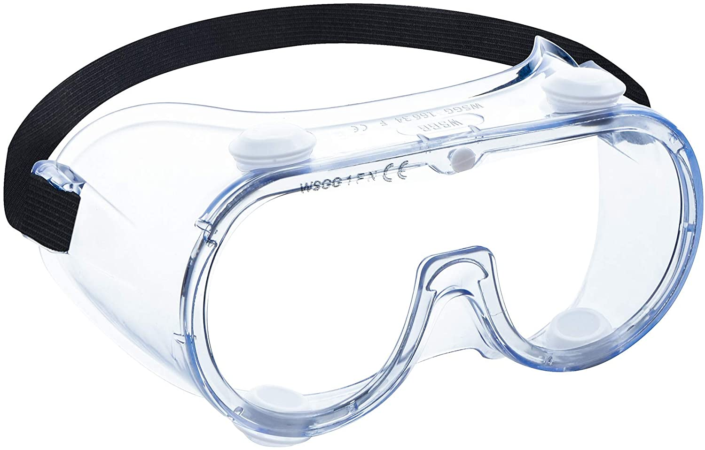

covercorps© Antimicrobial Anti-Fog Goggles

covercorps© Antimicrobial Anti-Fog Goggles is one of its kind. It has an antimicrobial film layer that kills germs on contact. Protects against liquid splashes, saliva, droplet transmission, bacteria, flying fragments, sand or dust. It's made with a lightweight soft frame, indirect ventilation and antifog polycarbonate lens to provide clear vision at all times and when you need it the most. AAF Goggles have an adjustable elastic headband that delivers a comfortable wear for long periods of time and fits over most prescription glasses. And to top it off covercorps© AAF Goggles is impact and scratch resistant providing great use for any situation. Get yours now while supplies last.
USD $20.00
Medical Grade Vinyl Gloves (Discontinued)

covercorps© Medical Grade Vinyl Gloves are thick and stretchy yet omfortable it feels almost if you have no gloves on. Its 3 Mil thickness provides durability yet thin enough to preform any medical task at hand. covercorps© Medical Grade Vinyl Gloves are latex free and come in a variety of sizes ranging from Small to X-Large. This product comes with 100 gloves per box or 20 boxes per case. These medical gloves are also multi use, so can be used for other tough jobs such as cleaning, gardening, for salons, also for making tattoos.